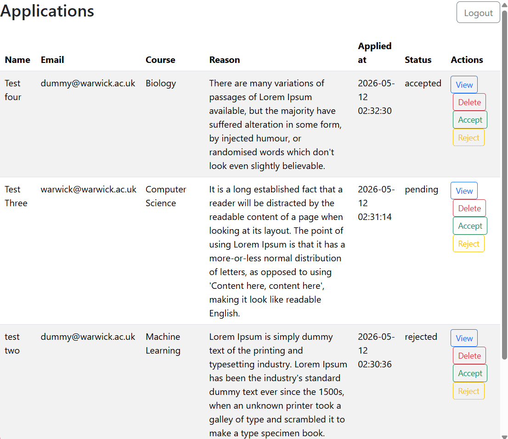
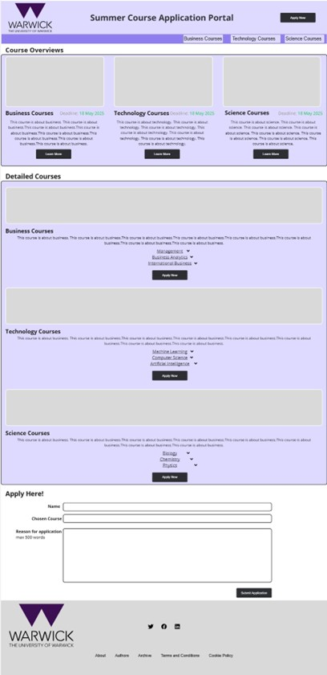
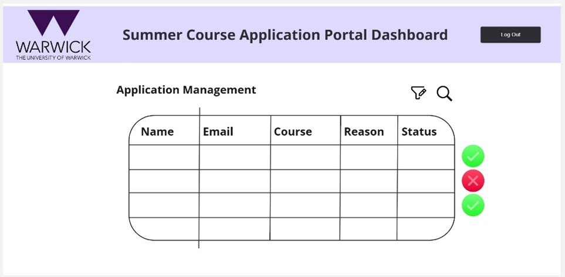
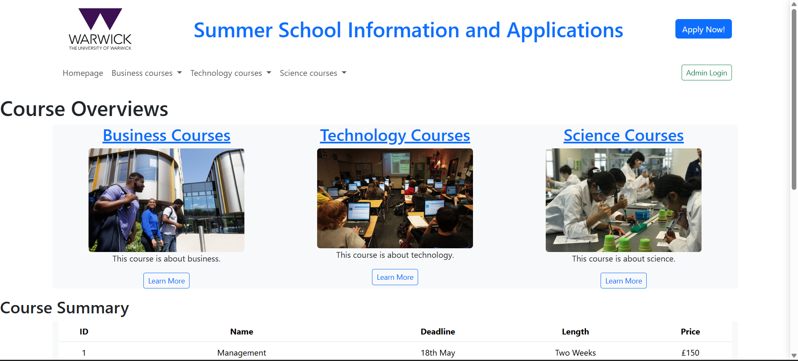
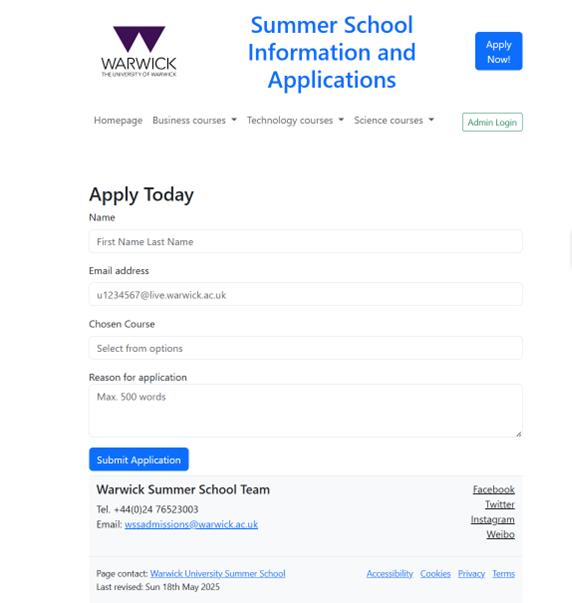
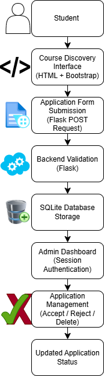
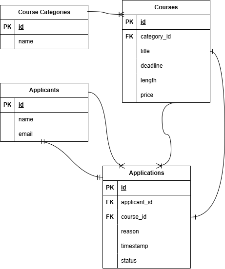

Featured Full-Stack Project
A Flask-based web application designed to streamline course discovery, student applications, and administrative workflow management for the University of Warwick Summer School.

The Summer School Information and Application Portal was developed to improve how prospective students browse and apply for Warwick Summer School courses, while also providing administrators with tools to manage applications efficiently.
The platform supports a complete application workflow, including course discovery, application submission, administrative review, and application status management.
The platform was designed around two key user groups: prospective students and university administrators.
Students needed clear course information, transparent application processes, and responsive feedback.
Administrators required tools for efficiently reviewing, updating, and managing applications.
Medium-fidelity wireframes were created during the planning stage to map user journeys, interface structure, and application flows.

Homepage Wireframe

Admin Dashboard Wireframe
Reusable Jinja2 templates and shared components were implemented to reduce duplication and improve maintainability.
The application interface and workflows were designed around user goals, accessibility, and usability.
The homepage provides users with categorised course listings and clear navigation pathways.

Students can apply through a structured application form with validation and confirmation feedback.

Administrators can review applications, update statuses, and manage submissions through a protected dashboard.
Implemented create, read, update, and delete functionality for application management.
Protected administrator routes using Flask session-based authentication.
Bootstrap was used to create responsive layouts across desktop and mobile devices.
SQLite was used to manage applications, timestamps, and status tracking.
The portal supports a complete end-to-end application management process.

Application data was stored in an SQLite relational database and managed through Flask backend routes.
The system handled application creation, retrieval, updates, and deletion while maintaining data integrity through validation and structured workflows.

Verified admin route protection and session behaviour.
Tested valid and invalid application submissions.
Confirmed application updates, deletions, and status management.
Verified layouts across desktop, tablet, and mobile devices.
A major challenge involved managing high volumes of applications near submission deadlines while maintaining administrator efficiency.
Proposed solutions included asynchronous processing, automated notifications, dashboard prioritisation, and future scalability planning through migration to PostgreSQL.
Automated confirmation and status update emails.
Applicant dashboards for tracking application status.
Search, filtering, and analytics functionality.
Migration to PostgreSQL for production-scale deployment.